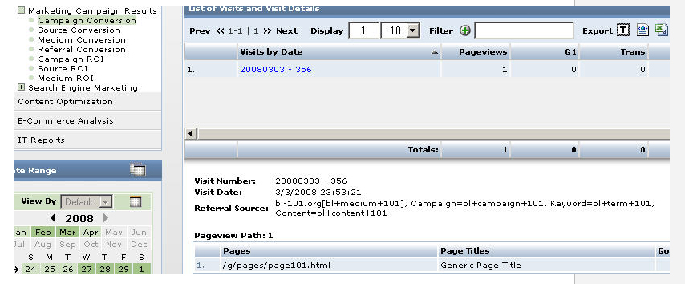

Associated Campaigns with Individual Visitors
Urchin 6 has reports that show detailed information about Campaigns on your site. You can find such reports by navigating to Reports -> Marketing Optimization -> Marketing Campaign Results. To see list of visitors who came to site via a particular campaign:
Navigate to All Reports -> Marketing Optimization -> Marketing Campaign Results -> Campaign Conversion. (or Source Conversion, Medium Conversion, Referral Conversion)
- Click the "+" sign next to one of the campaigns (for example, "organic").
Click the "Analysis Options" button (
 ) next to the one of the search engines (for example "google[organic]") and select the "Visitor History Drilldown" option.
) next to the one of the search engines (for example "google[organic]") and select the "Visitor History Drilldown" option. - Click one of the Visitor IDs.
Referral/Campaign information will be displayed along with a list of specific visits.
